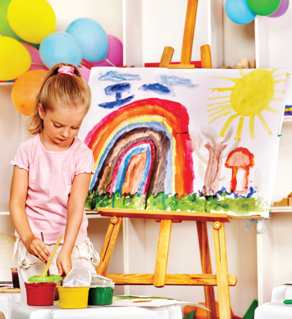

Creativity is a bridge to learning.
When your child is creative and curious, they can come up with answers to the problems she encounters.
Creativity helps your child become a thoughtful, inquisitive, and confident learner later on, when they starts school.
One of the most important ways that your toddler is tuning in to her creativity is by experimenting with art materials.
As they grabs that chunky crayon and gets to work,
you will see their art and writing change and become more controlled and complex as they grows.
Drawing enables your child's imagination to become more active. Each time they draw they access their imagination
and make physical representations of what's in their mind.
People's imaginations have allowed them to create all of the things that we use and are surrounded by everyday